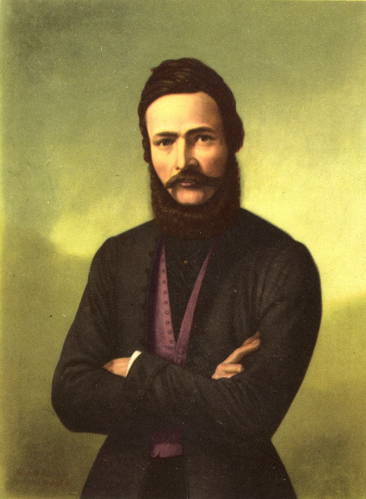

Ľudovit Štúr
Ľudovit Štúr sa narodil v malebnom mestečku menom Uhrovec, kde sa 28.10. v roku 1815 narodil do rodiny evanjelickeho kňaza a učitela.
Opustil nás 12.1. v roku 1856 v Modre, keď sa nešťastnou náhodou postrelil pri polovačke a o pár týždňov zomrel na následky.
Bol to politik, spisovateľ, jazykovedec a národný buditeľ.
Prepojenie na wikipédiu o Ľudovitovi Štúrovi
